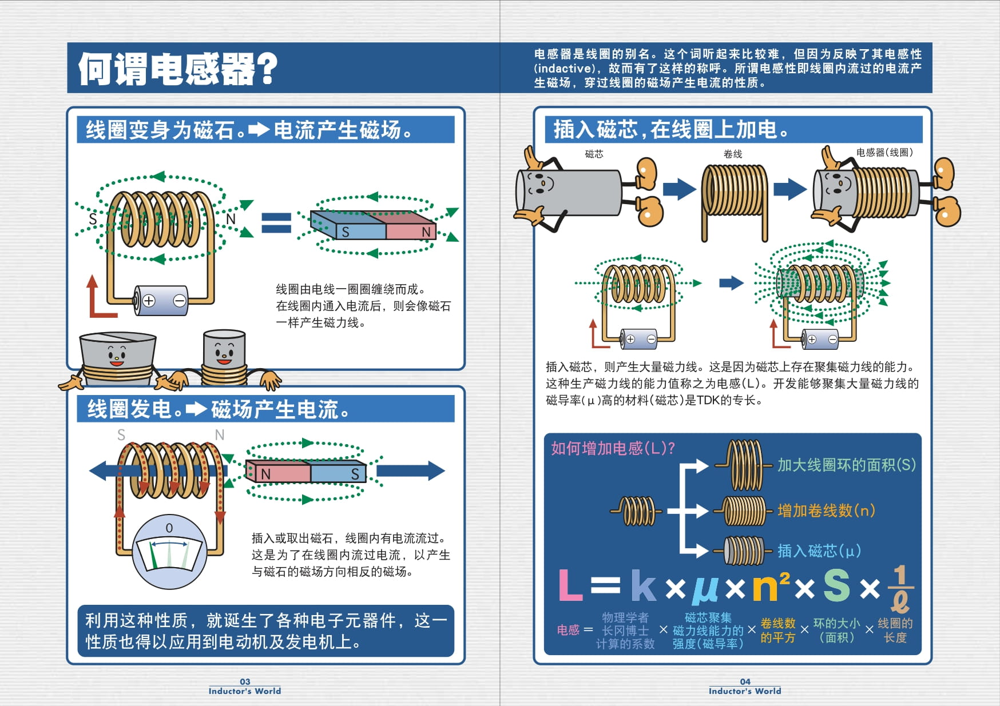
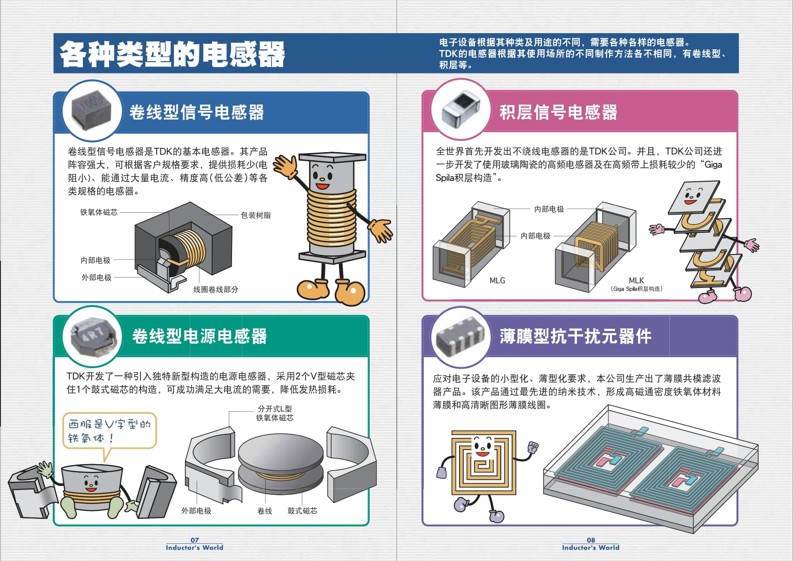
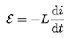

下面用三个篇章解释
# 视频篇
# 漫画篇




图片提取自 TDK 株式会社
# 文字篇
1、电感器与电感
电感器（inductor）是一种电路元件；电感器一词在口语上也会被简称为电感，但如需严谨表达为实体物件的情况，仍宜称为电感器
电感（Inductance）是闭合回路的一种属性，即当通过闭合回路的电流改变时，会出现电动势来抵抗电流的改变
2、自感和互感
・自感：当电感这种属性现象出现在自身回路中，那么这种电感称为自感（self-inductance），是闭合回路自己本身的属性
通常自感是以字母 “L” 标记，这可能是为了纪念物理学家海因里希・楞次的贡献
・互感：假设一个闭合回路的电流改变，由于感应作用在另外一个闭合回路中产生电动势，这种电感称为互感（mutual inductance）
互感是以字母 “M” 标记，是其英文（Mutual Inductance）的第一个字母
3、表达式

其中：
ε 是电动势
L 是电感
i 是电流
t 是时间
4、电感单位和转换
采用国际单位制，电感的单位是亨利（henry），标记为 “H”，是因美国科学家约瑟・亨利命名。1 H = 1 Wb /A
常用单位有：亨 (H)、毫亨 (mH)、微亨 (μH)、纳亨（nH）
单位转换：1H = 1000mH = 10^6μH = 10^9nH
5、电感的串联和并联
- 并联电路中的电感元件每个都有相同的电势差。其总的等效电感（Leq）：


- 通过串联电感的电流保持不变，但每个电感元件上的电压可不同。其电压之和等于总电压。总电感：


这种简单的关系只有在没有磁场互耦（mutual coupling）的条件下才成立
6、电感的应用
・功率电感：主要用于电压转换，常用的 DCDC 电路都要使用功率电感
・去耦电感：主要用于滤除电源线或信号线上的噪声
・高频电感：主要用于射频电路，实现偏置、匹配、滤波等电路
电感在射频电路中用途最多
7、感性负载电压电流的超前滞后
首先要提醒，相位的概念是针对正弦信号而言的，直流信号、非周期变化信号等都没有相位的概念
由于 Sin [ωt] 在求导或积分后会出现 Sin [ωt ± 90°]，所以对于接上了正弦波的感性负载，通过接上理想的直流电压表、直流电流表，可以观察到波形超前滞后的现象

如果还表现的还不够生动，可以用动态图演示，其用红色表示电压，蓝色表示电流：

电压的变化超前于电流，电流的变化滞后于电压，所以若电感器通入交流的信号，相角为 90 度，亦即电流滞后电压 90 度

用不同的颜色描述电压的大小，蓝色 > 黄色 > 红色；用不同的粗细和箭头描述电流的大小和方向，电流最大时电感磁场能最大
8、感抗
因为电路中存在电感电路（如线圈），由此产生的变化的电磁场，会产生相应的阻碍电流变化的感生电动势。这个作用称为感抗 。电流变化越大，即电路频率越大，感抗越大；当频率变为 0，即成为直流电时，感抗也变为 0。感抗会引起电流与电压之间的相位差。感抗可由下面公式计算而来：

复数分析中：

其中
・j 是复数单位
・Xl 就是感抗，单位为欧姆
・ω = 2πf 是角速度，单位为 弧度 / 每秒
・f 是频率，单位为赫兹
・L 是线圈电感，单位为亨利
9、电感的特性总结
・通直流隔交流
・通低频阻高频
・电感两端的电流不能够突变，电压能突变
10、电感选型主要参数
・电感量（也称自感系数，是表示电感器产生自感应能力的一个物理量）
・允许误差（电感器上标称的电感量与实际电感的允许误差值）
・品质因数 Q（指电感器处于某一特定频率时，它的电感电抗和电阻之间的比例）
・额定电流（电感器在允许的工作环境下能承受的最大电流值）
11、品质因数 Q
一个理想的电感元件是不会因流经线圈的电流的大小而改变其敏感度。但是于实际环境下，线圈内的金属线会令电感元件带有绕组电阻；由于绕组电阻是以串联著电感元件的电阻形式出现，所以亦被称为串联电阻。由于串联电阻的存在，实际电感元件的特性会不同于理想电感，可以用品质因数表示电感和电阻之的比例
电感元件的品质因数 Q 能由以下方程式可得，R 是电感元件的内部电抗：

相同条件下内阻越大，品质因数越小。品质因数可以看做是衡量电感元件好坏的标准之一，品质因数越高通常意味着电感的质量越好；电感器品质因数的高低与线圈导线的直流电阻、线圈骨架的介质损耗及铁心、屏蔽罩等引起的损耗等有关